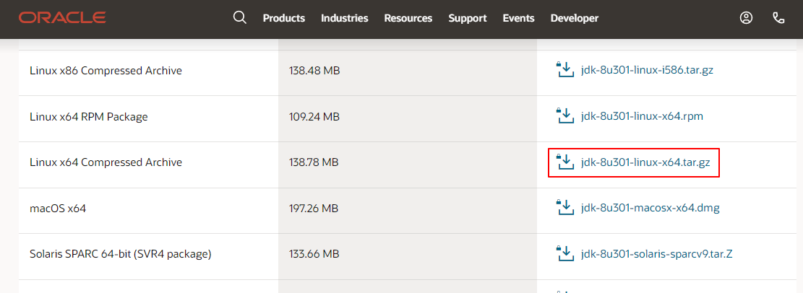

本文记录Windows环境和Linux环境(centos7)安装Java以及Linux环境升级Java JDK版本的步骤。
Windows环境安装Java JDK1.8
1、下载安装
jdk下载下载地址：https://www.oracle.com/technetwork/java/javase/downloads/jdk8-downloads-2133151.html
按照默认路径安装即可。
2、配置环境变量
“我的电脑” 右键菜单—->属性—->高级—->环境变量—->系统变量—>新建
- 变量名：JAVA_HOME
变量值：C:\Program Files (x86)\Java\jdk1.8.0_144 - 变量名：CALSS_PATH
变量值：.;%JAVA_HOME%\lib\dt.jar;%JAVA_HOME%\lib\tools.jar;
找到path变量名—>“编辑”添加：
- 变量名：PATH
变量值：%JAVA_HOME%\bin;%JAVA_HOME%\jre\bin;
查看是否安装成功：java -version
Windows环境安装Java JDK11
Java JDK11下载地址：Java Downloads | Oracle
双击安装。
检查是否安装成功：
1 | $ java --version |
Linux环境安装Java JDK
介绍centos7环境下Java JDK安装方法。
1、下载安装包
安装包下载路径：https://www.oracle.com/java/technologies/javase/javase-jdk8-downloads.html 。

2、安装
（1）创建安装目录1
mkdir /usr/local/java/
（2）解压至安装目录1
tar -zxvf jdk-8u301-linux-x64.tar.gz -C /usr/local/java/
3、设置环境变量
打开文件：vim /etc/profile
在末尾添加
1 | export JAVA_HOME=/usr/local/java/jdk1.8.0_301 |
使环境变量生效1
source /etc/profile
添加软链接1
ln -s /usr/local/java/jdk1.8.0_301/bin/java /usr/bin/java
检查1
2
3
4
5# java -version
java version "1.8.0_301"
Java(TM) SE Runtime Environment (build 1.8.0_301-b09)
Java HotSpot(TM) 64-Bit Server VM (build 25.301-b09, mixed mode)
[root@Server ~]#
升级Java JDK版本
如果要升级Java JDK版本，可以不删除旧版本，安装新版本的JDk即可。
查看版本：
1 | $ java --version |
查看已安装jdk：
1 | $ yum list *openjdk* |
卸载：
1 | $ yum remove java-1.8.0-openjdk-devel |
搜索可安装jdk版本：
1 | $ yum search java | grep jdk |
安装指定版本：
1 | $ yum -y install java-11-openjdk.x86_64 |
使用alternatives命令设置默认Java版本：
1 | [root@Server ~]# java -version |
Ubuntu安装Java
1 | $ sudo apt-get update |
检查：
1 | $ java -version |
本文标题:Java环境安装配置步骤介绍
文章作者:hiyo
文章链接:https://hiyongz.github.io/posts/java-install-on-windows-and-centos7/
许可协议:本博客文章除特别声明外，均采用CC BY-NC-ND 4.0 许可协议。转载请保留原文链接及作者。